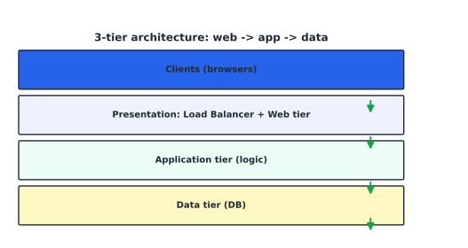
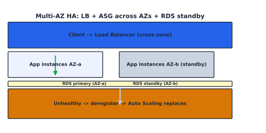

Web and Application Services#
Learning Objectives#
Recognize a multi-tier architecture.
Run a web server and the role of the reverse proxy.
Front traffic with an Elastic Load Balancer.
Route with Amazon Route 53 aws_route53 and secure it with AWS Certificate Manager aws_acm.
Apply an application deployment pattern (blue/green, canary).
Multi-Tier Architecture#
Multi-tier splits responsibilities across layers, each on separate hosts (so one layer failing need not collapse the whole app).
{kind=link}

Fig. 15 3-tier stack: clients -> load balancer + web tier -> app tier -> data tier.#
Tier |
Responsibility |
|---|---|
Presentation |
web server / load balancer |
Application |
business logic |
Data |
database |
Web Servers#
Two common servers (both serve HTTP):
Server |
Trait |
|---|---|
Apache httpd |
process-per-request ( |
Nginx |
event-driven single worker, great reverse proxy + static |
Minimal nginx block:
server {
listen 80;
server_name example.com;
root /var/www/html;
location / { try_files $uri $uri/ =404; }
location /api { proxy_pass http://127.0.0.1:8000; }
}
Nginx proxy_pass makes it a reverse proxy: it forwards /api to an upstream app server,
doing TLS termination, rate limiting, and caching at the edge of the app tier.
Elastic Load Balancer#
ELB distributes traffic across healthy targets. Focus: ALB (HTTP/HTTPS, layer 7).
{kind=link}

Fig. 16 ALB routes to healthy targets across AZs; unhealthy targets are deregistered and replaced.#
Concept |
Notes |
|---|---|
Target group |
pool of backends (instances/containers/IPs) |
Listener |
port + protocol (80, 443) |
Rules |
host/path-based routing (e.g., |
Health check |
probes; unhealthy targets removed automatically |
ALB does cross-zone balancing and connection draining (finishes in-flight requests during deploy) — essential for zero-downtime deployments (Ch 14).
Amazon Route 53#
Route 53 = managed, authoritative DNS + domain registration + health checks.
Record |
Meaning |
|---|---|
A / AAAA |
IPv4 / IPv6 address |
CNAME |
alias to another name |
ALIAS |
points to an ELB/CF bucket (no query charge) |
MX |
mail server |
TXT |
SPF/DKIM text |
Routing policies:
Weighted → A/B test / percentage routing.
Latency → route to the lowest-latency region.
Failover → active/passive on health check.
Geolocation → route by country.
Combine an ALIAS record + a health-checked standby for active/passive failover.
AWS Certificate Manager#
ACM provisions, renews, and deploys TLS certificates (free of charge).
Request a public cert → validate by adding a CNAME to your DNS.
Attach to an ALB (regional cert) or CloudFront (must be in
us-east-1).ACM never exports private key out — it terminates TLS for the registered resource.
Tip
HTTPS everywhere: ALB listener on 443 with an ACM cert; redirect HTTP → HTTPS at the ALB.
Application Deployment#
Deployment = getting new code safely to users without downtime.
Pattern |
How |
Risk |
|---|---|---|
In-place |
patch running instances |
downtime, hard rollback |
Rolling |
replace in batches |
steady, low |
Blue/Green |
two parallel envs, switch traffic |
clean rollback |
Canary |
small % first, then more |
early fault detection |
AWS tooling:
CodeDeploy (EC2/ Lambda / on-prem), ECS/EKS rolling updates,
CodePipeline + CodeBuild for CI/CD.
Route 53/ALB weighted routing powers canary; ALIAS + health checks power blue/green failover.
Checkpoint#
Q1. In a 3-tier design, which tier would a SQL injection in a query most likely target?
Answer. The data tier (the database); it shows why least-privilege DB credentials and input validation in the app tier matter.
Q2. Why is Nginx often chosen as a reverse proxy instead of a pure web server?
Answer. Its single-worker async model handles many connections cheaply, and it offers built-in proxying, TLS termination, and rate limiting.
Q3. An ALB health check returns 503. What happens to that instance’s traffic automatically?
Answer. It is marked unhealthy and removed from the target group; Auto Scaling eventually replaces it.
Q4. For an active/passive failover architecture, which Route 53 choices do you combine?
Answer. ALIAS record to the active ALB + a Failover routing policy with health checks.
Q5. Which deployment pattern gives the cleanest rollback, and why?
Answer. Blue/Green: the old environment stays intact until you switch traffic, so rolling back is a single traffic switch back.
Sources#
The concepts in this chapter are summarized from the following authoritative sources:
HTTP/1.1 (RFC 2616): https://www.rfc-editor.org/rfc/rfc2616
Elastic Load Balancing User Guide: https://docs.aws.amazon.com/elasticloadbalancing/latest/
Amazon Route 53 Developer Guide: https://docs.aws.amazon.com/Route53/latest/DeveloperGuide/
AWS Certificate Manager User Guide: https://docs.aws.amazon.com/acm/latest/userguide/